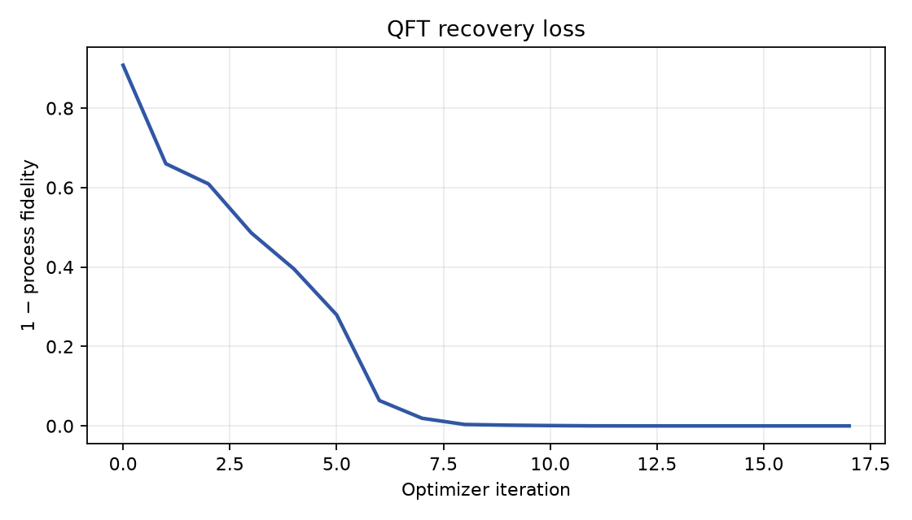
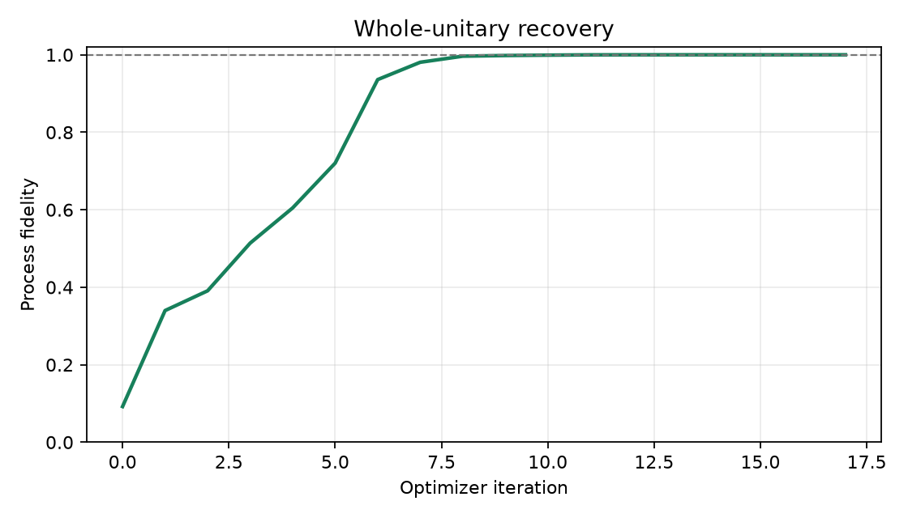
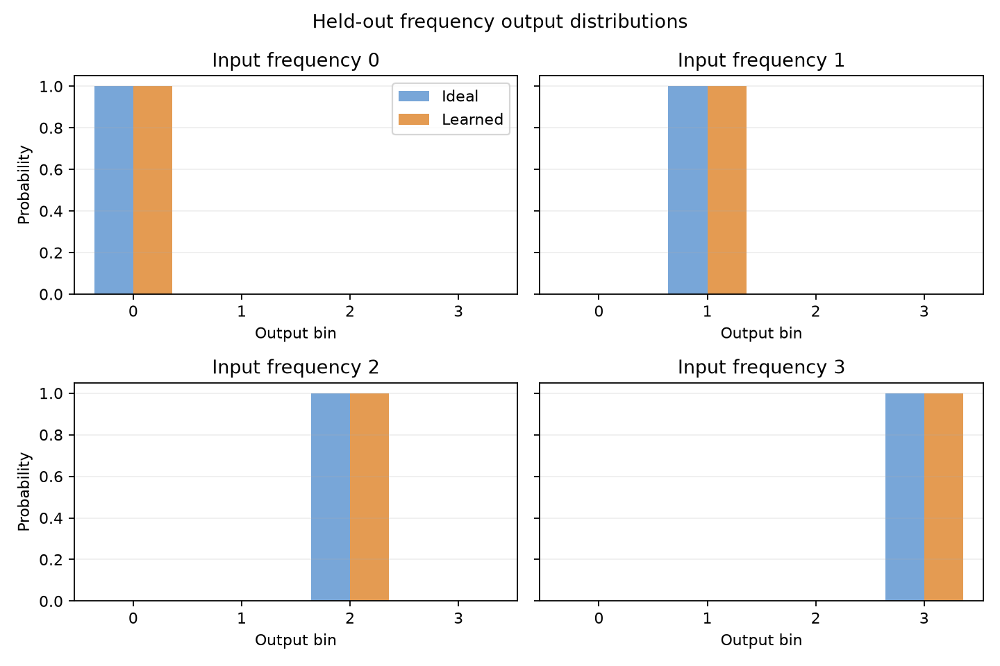
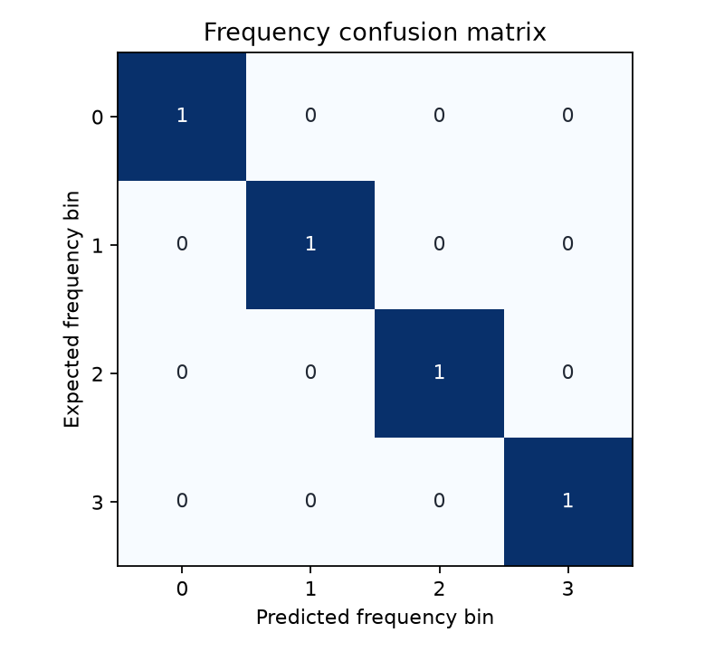
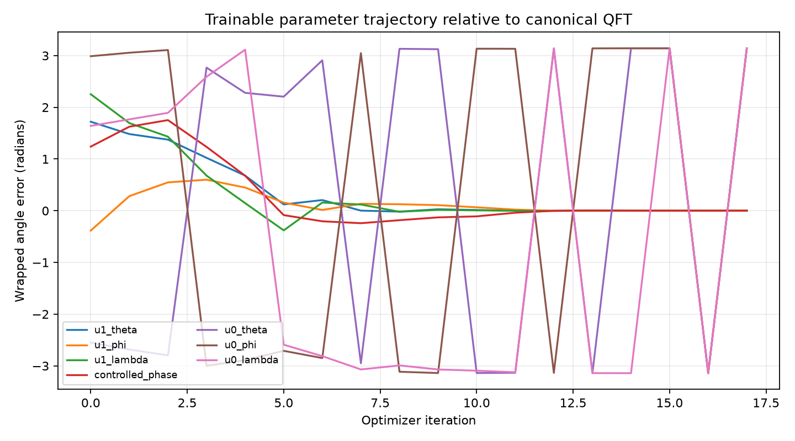

Run: 20261017T000333116098Z_qft-recovery_seed-0042_b7a380cf
| run_id | 20261017T000333116098Z_qft-recovery_seed-0042_b7a380cf |
|---|---|
| status | FINISHED |
| optimizer | L-BFGS-B |
| protocol_version | 0.1.0 |
| comparison_group | qft-recovery-baseline |
| ansatz | qft2_trainable_u_cp_u_swap |
| seed | 42 |
| data_seed | 2026 |
| initialization_scale | 1.0 |
| max_iterations | 300 |
| train_size | 64 |
| validation_size | 32 |
| test_size | 64 |
| iterations | 17 |
| function_evaluations | 176 |
| optimizer_success | True |
| optimizer_message | CONVERGENCE: RELATIVE REDUCTION OF F <= FACTR*EPSMCH |
| initial_process_fidelity | 0.09211160392656959 |
| elapsed_seconds | 0.4175039239999023 |
| qft_process_fidelity | 0.9999999999999791 |
| test_frequency_accuracy | 1.0 |
| validation_state_fidelity_mean | 0.9999999999999801 |
| validation_output_total_variation_mean | 6.67896680413288e-08 |
| test_state_fidelity_mean | 0.9999999999999825 |
| test_state_fidelity_min | 0.9999999999999707 |
| test_output_total_variation_mean | 6.852469536917398e-08 |
| frequency_accuracy | 1.0 |
| frequency_cross_entropy | 1.7208456881690106e-14 |
| frequency_total_variation_mean | 1.6903157771245454e-14 |





{
"u1_theta": 1.5707963547872432,
"u1_phi": -3.1300866367320515e-07,
"u1_lambda": 3.1415925318749105,
"controlled_phase": 1.570796751552208,
"u0_theta": -1.5707963338272843,
"u0_phi": 3.1415926142297548,
"u0_lambda": 6.283185008687288
}